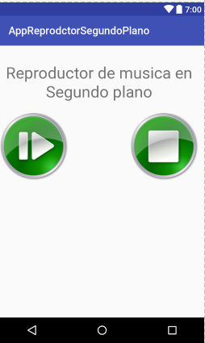

Servicios
04 de Enero de 2021
Descripción general de los servicios

Estos son los tres tipos diferentes de servicios:
Primer plano:
Segundo plano:
Enlace
Diferencia entre un servicio y un subproceso
Conceptos básicos
Métodos de devolución de llamada más importantes que debes anular:
onStartCommand()
Administrar el ciclo de vida de un servicio
El ciclo de vida del servicio (desde el momento en que se crea hasta que se destruye) puede seguir dos rutas de acceso diferentes:Un servicio iniciado
Un servicio enlazado